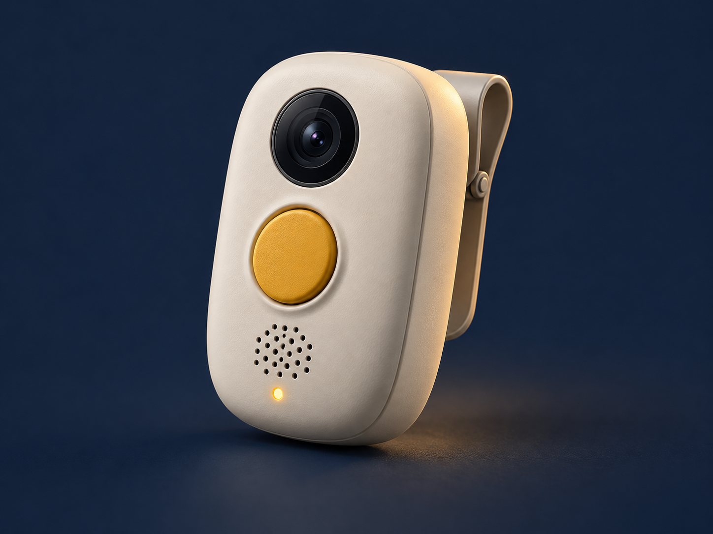

Non vi diciamo se arriva una macchina. Vi diciamo se fate in tempo.
Team Passo Sicuro · App per l'attraversamento stradale sicuro degli anziani
342
anziani morti nel 2025 attraversando i vicoli del centro storico di Gattapelata.
Fonte: premessa del bando di gara.
Rischi da affrontare nei vicoli
Stima dei tempi
Distanza, velocità e passo personale possono rendere difficile scegliere quando attraversare.
Passo personale
Per attraversare servono più secondi di quanti ne immagina chi guida.
Segnali poco percepibili
Il solo suono del traffico non è una misura affidabile del tempo disponibile.
Ostacoli sul percorso
Gradini e sampietrini tolgono lo sguardo dalla strada proprio mentre attraversano.
E i vicoli restano come sono: lavoriamo senza opere stradali; l'app non dipende dal GPS.
L'idea
Non vi diciamo se arriva una macchina. Vi diciamo se fate in tempo.
Passo Sicuro confronta due tempi: quando arriva il veicolo e quanto serve a quella persona per arrivare dall'altra parte.
Livello 1: attivazione del canale web
1
Un tasto
Telefono appeso al collo, mani libere. Si preme il grande tasto ATTRAVERSO.
2
Guarda
La voce dice «Guarda a sinistra», «a destra», «avanti». Si gira il busto, come da bambini.
3
Calcola
La fotocamera riconosce i veicoli sul telefono e stima quando arrivano.
4
Decide
La simulazione mostra «Aspetta» e «Vai». Il riconoscimento reale resta sperimentale.
Niente GPS necessario. Visuale e affidabilità da validare. SMS opzionale, simulato nella demo.
Il calcolo: due tempi a confronto
Il veicolo arriva tra
3 s
Stimato da quanto cresce il veicolo nell'inquadratura: nessuna distanza da misurare.
<
A Maria, 82 anni, servono
7 s
Vicolo di 5 m ÷ 0,8 m/s, il suo passo = 6,3 s, più 1 s di margine.
ASPETTA
La simulazione illustra «Aspetta» e «Vai». Gli avvisi di attesa non provano passaggi, conflitti o incidenti evitati.
Livello 2: strisce e semafori
Sulle strisce
Lampeggiante LED a energia solare.
Sensore radar o termico: si accende da solo, anche per chi non ha il telefono.
Beneficio aggiuntivo da misurare rispetto alla sola app.
Ai semafori
Modulo sul regolatore che c'è già.
L'app chiama il verde: niente pulsante da premere.
Il verde si allunga finché il sensore vede la persona sulle strisce.
Non è attivo a T+90': si installa nei 48 mesi di gestione, partendo dagli attraversamenti con più incidenti. Su pali e semafori esistenti, senza opere stradali.
Piano massimo: 100 attraversamenti e 50 semafori. Scelta dopo sopralluogo, confronto e costo completo per sito.
Demo dal vivo · meno di 60 secondi
Maria, 82 anni, attraversa il vicolo.
La voce che la guida passo per passo.
Il calcolo che la ferma quando non fa in tempo.
La strada che si accende e allunga il verde.
Provatela dal vostro telefono: hackathoni3ghe.github.io/gattapelata
Criterio 2 · 20 punti
Facilità d'uso: assistenza iniziale
Un solo tasto
ATTRAVERSO, grande come mezzo schermo.
Voce chiara
Frasi brevi in italiano. Testo grande, alto contrasto.
Mani libere
Telefono appeso al collo con un porta-telefono.
Gesto già noto
Rotazione del busto e avvio autonomo da provare con gli anziani.
Pronto all'uso
Assistenza finanziata. Collaborazioni e telefoni compatibili da confermare.
Anche senza telefono
Fase 2: dispositivo indossabile autonomo. Agli attraversamenti attrezzati aiuta anche il lampeggiante.
Fase 2 · alternativa al telefono · proposta da sviluppare
Passo Sicuro da indossare

Concept generato con IA · Hardware non ancora realizzato
Lo indossi. Premi un tasto. Ricevi avvisi con voce e vibrazione.
Camera, computer e batteria nel dispositivo. Nessun telefono da gestire, nessuno schermo da leggere.
«Guarda a sinistra.» «Auto in arrivo. Aspetta.»
La prima versione usa una camera e richiede di girare il busto. Non vede a 360° o dietro gli angoli. Progetto da validare.
€ 300 solo hardware stimato
100 persone pilota da € 224.000
Fino a 1.000 utenti dopo le prove
Solo dopo T+90': prima app sul telefono; poi sviluppo, prove e pilota controllato. Stime IVA esclusa, già incluse nell'offerta.
Criterio 1 · 30 punti
Efficacia: come la misuriamo
Punto di partenza
342
morti nel 2025
Obiettivo aspirazionale
330 vite/anno
Su 342 decessi della baseline: −96,5% a regime. Traguardo da validare, non previsione dimostrata.
Dall'app
Avvisi di attesa: contatore illustrativo. Non dimostrano un passaggio del veicolo o un incidente evitato.
Dai sensori
Attraversamenti e conflitti contati agli incroci, indipendentemente da quante persone usano l'app.
Dal confronto
Siti comparabili, prima/dopo, esposizione e incertezza. Obiettivo −15% conflitti per 1.000 attraversamenti; efficacia da verificare.
Criterio 4 · 10 punti
T+90': canale web e prerequisiti
T+0
Firma del contratto.
T+20'
App pubblicata come pagina web sicura (HTTPS) e provata da telefono. Nessuno store da attendere.
T+40'
Link e avvio assistito. Responsabili, telefoni e canali di distribuzione già disponibili prima della firma.
T+90'
Canale attivato se le prove riescono. Uso stradale da validare.
Poi, nei 48 mesi di gestione: lampeggianti e moduli semaforici, a partire dagli attraversamenti con più incidenti.
Criterio 5 · 5 punti
Privacy: immagini elaborate sul telefono
Dato
Dove resta
Immagini della fotocamera
Solo sul telefono: mai salvate né inviate
Passo, nome e contatto del familiare
Solo sul telefono
Account e posizione GPS
Nessun account, nessun GPS
Contatori proposti al Comune
Aggregazione da progettare; non implementata nella demo
Sensori agli incroci
Radar o termici: nessuna immagine
SMS al familiare
Opzionale, disattivato; demo simulata
Conservazione proposta
Eventi: 30 giorni. Aggregati mensili: 48 mesi.
Offerta economica · stima IVA esclusa · 48 mesi
Proposta € 3,43 milioni
Voce
Importo
Costo tecnico completo, inclusa riserva
€ 2.665.000
Assistenza utenti e coordinamento
€ 272.000
Formazione e distribuzione assistita
€ 259.500
Misura indipendente dell'efficacia
€ 131.000
Riserva servizi residua
€ 102.500
Totale massimo stimato
€ 3.430.000
Costo tecnico completo
€ 2,665 M
77,7% del proposto
Sviluppo, posa ed esercizio inclusi. Massimo € 2,7675 M se tutta la riserva serve alla messa in opera.
Base d'asta € 10 milioni. Differenza di piano € 6,57 milioni (65,7%); non risparmio già conseguito. Quantità, compatibilità e preventivi da confermare.
Riserva complessiva € 450.120, già inclusa. Tranche autorizzate e prestazioni rendicontate; costo tecnico riclassificato, mai sommato due volte.
Art. 4 e Art. 7
Requisiti di partecipazione
Requisito
Dichiarazione
Requisiti generali per contrattare con la PA
Da documentare
Media annua di like su LinkedIn, ultimi tre anni: almeno 5.000.000
Referenza da documentare
Almeno una app usata da nessuno, ma scaricata da molti
Referenza da documentare
Regolamento del Fantamorto 2025-2026
Gag del bando, nessuna norma attribuita
Grazie
Passo Sicuro
Partiamo dal canale web. Estendiamo solo dopo le prove.
Pilota: € 224.000 per 100 utenti, sviluppo e prove inclusi. Hardware € 300; pilota completo € 2.240/utente. Se non supera le prove, nessun ordine dei restanti 1.080 dispositivi.
Manutenzione successiva separata; una sola R&D, ricambi non duplicati. Quantità validate, riserve autorizzate e consumo SMS rendicontato.
Approfondimento economico
Confronto prima degli acquisti
Opzione
Limite da valutare
Informazione e formazione
Non osservano il traffico durante l'attraversamento.
Accompagnamento
Copre persone, luoghi e orari con personale disponibile.
Regolazione degli impianti esistenti
Solo dove ci sono impianti compatibili.
App sui telefoni personali
Richiede telefono, visuale e affidabilità da dimostrare.
App più hardware mirato
Beneficio aggiuntivo da provare e costo completo per sito.
Stessa copertura, stesso periodo, costo totale sui 48 mesi. Preferire l'opzione meno costosa che soddisfa i requisiti e dimostra beneficio.
Preventivi comparabili ancora da acquisire: nessuna superiorità economica o efficacia già dimostrata.